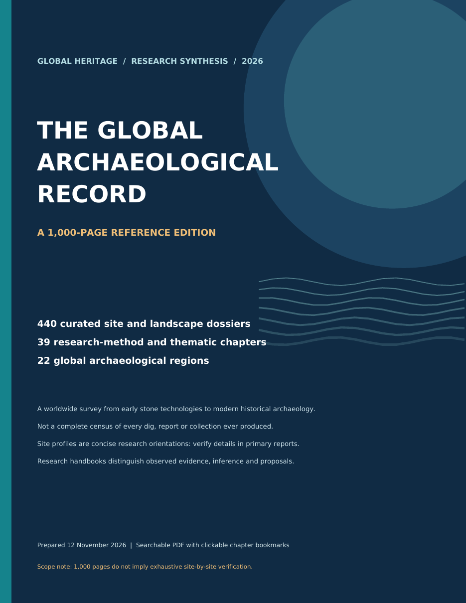

Navigate globally
Twenty-two linked regional starting points organize 440 concise site and landscape dossiers without forcing the world into a single developmental ladder.
Research architecture · world archaeology · critical evidence
The Global Archaeological Record is a searchable, 1,000-page orientation to archaeological questions, methods, regions, and evidence. This page turns the reference edition into a guided research experience—without pretending a synthesis can replace excavation reports, collections, permits, or community authority.
Evidence boundary: this is a high-level research synthesis and navigation artifact—not a complete census, independently audited excavation catalogue, fieldwork credential, or substitute for primary reports.

Designed for inquiry
The edition is organized to help a reader move from a broad question to a specific dossier, test an interpretation, identify missing evidence, and return to the primary record. Its strongest feature is not volume—it is the repeated separation of observation, chronology, inference, alternatives, and stewardship.
Twenty-two linked regional starting points organize 440 concise site and landscape dossiers without forcing the world into a single developmental ladder.
Thirty-nine thematic chapters frame the questions, measurements, controls, rival explanations, and reporting limits that make a claim testable.
Each dossier names comparison problems while warning that similar objects, buildings, or practices can emerge through different histories.
Law, permission, conservation, descendant and local communities, archive quality, and non-destructive alternatives remain part of the research design.
How the 1,000 pages fit together
Pages 4–120 build method and thematic literacy in 39 three-page chapters. Pages 121–1,000 shift to 440 two-page site dossiers arranged into 22 regions.
Interactive directory
Search the 39 research chapters and 22 regional atlas sections, then send any result directly to the embedded reader. Page destinations are taken from the PDF’s own outline and regional directory.
Showing all 61 entry points.
Evidence before narrative
An archaeological explanation is strongest when every interpretive step can be traced back to context, sequence, measurement, comparison, and an archive another researcher can inspect. The reference edition repeats this logic across methods and site dossiers.
Where was the material found, by whom, under what recovery conditions, and with which provenience?
Which deposits, features, cuts, fills, or reuse phases came before and after the observation?
What was directly recorded, how was it sampled, and which uncertainty or preservation limits apply?
Which formation process, later disturbance, parallel solution, or collection practice could produce a similar pattern?
Can the context IDs, raw data, methods, permissions, and collection location support review or replication?
| Layer | Question to ask | Minimum defensible output |
|---|---|---|
| Observation | What material or spatial fact was measured, and is interpretation being kept separate? | Object or feature record, context ID, recovery conditions, instrument or protocol. |
| Chronology | Does the date belong to the event being discussed, and how does it fit the stratigraphic sequence? | Relative order, calibrated interval where applicable, sample-event relationship, uncertainty. |
| Association | Are the finds genuinely linked, or could movement, mixing, reuse, erosion, or later digging explain proximity? | Plan, section, taphonomic assessment, disturbance history, negative-evidence limits. |
| Inference | Which explanation best fits—and what would the strongest rival explanation predict? | Bounded claim, competing hypotheses, comparison sample, evidence that could change the judgment. |
| Stewardship | Who has authority to excavate, interpret, conserve, publish, and manage the material? | Permissions, consultation, conservation plan, archive destination, accessible source register. |
Dossier example · page 121
Material focusThe dossier identifies large stone artifacts and early knapping as the material signal to examine.
Core questionHow securely are artifacts and manufacturing traces associated with the cited deposit and period?
TestsDocument artifact associations, manufacturing sequence, stratigraphy, alteration, and independent regional comparison.
Decision boundaryA concise orientation cannot establish exact dates, counts, cultural identity, or authorship without the primary excavation and laboratory record.
Embedded reference edition
The reader opens on the linked regional directory. Use a preset, enter any page from 1 to 1,000, or choose an entry in the explorer above. Browser PDF controls provide search, zoom, outline, print, and download where supported.
Reader positioned at page 2: Regional atlas directory.
If the embedded reader does not load, open the complete PDF in a new tab or download it.
Artifact integrity
The portfolio copy is byte-for-byte identical to the supplied reference edition. Structural inspection found 1,000 readable text pages, 501 valid outline destinations, 22 working directory links, no encryption, no forms, no embedded JavaScript, and no PDF open action.
The first page is a cover; pages 2–1,000 carry visible page numbering. All 1,000 pages yielded searchable text during inspection. Representative cover, directory, method, regional, middle, and final pages were rendered and visually reviewed before publication.
0468b3acda34f21c685fdbdf88df0a78f74c46a29de995160eff0ca99f21c6cbResearch principle
Begin with what survives. Preserve where it was found. Separate measurement from meaning. State what could change the conclusion.